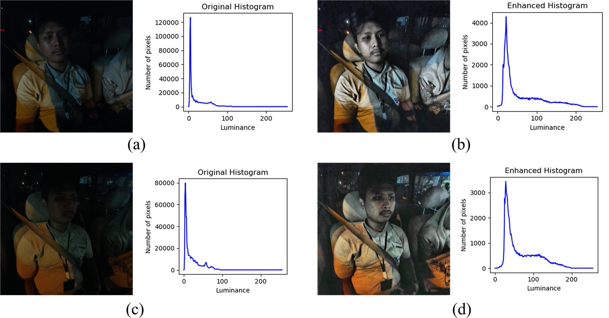
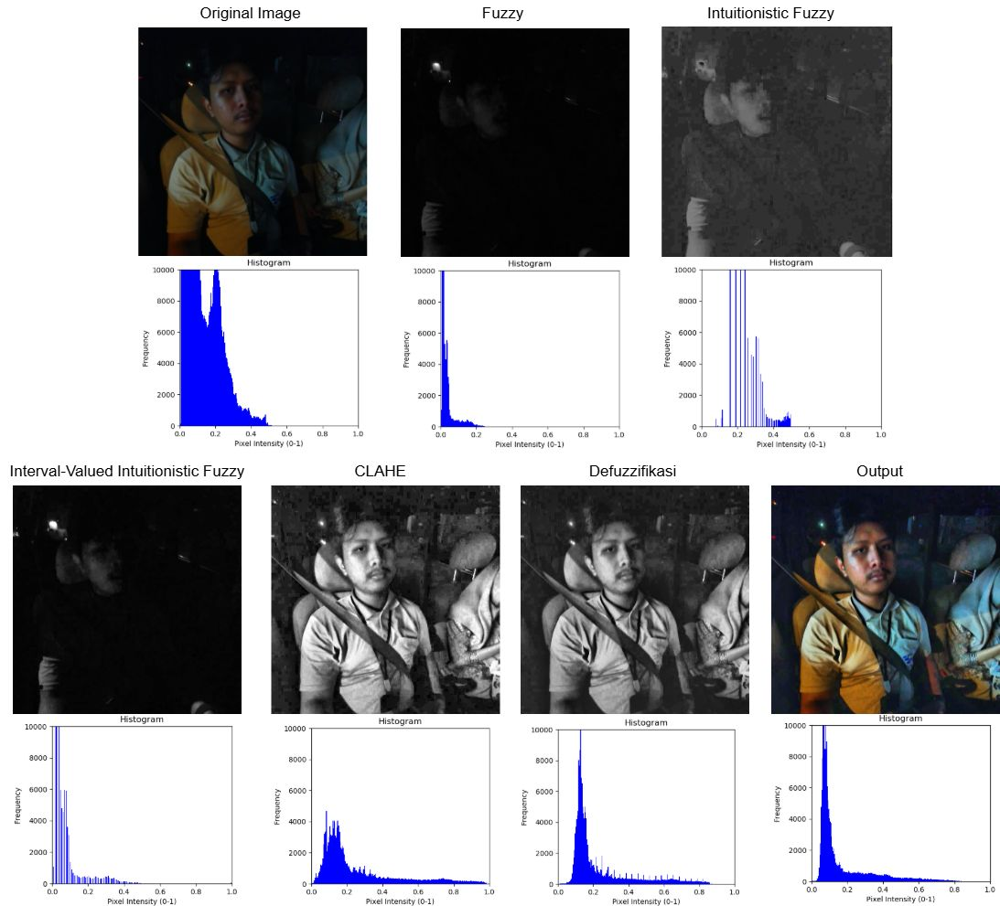
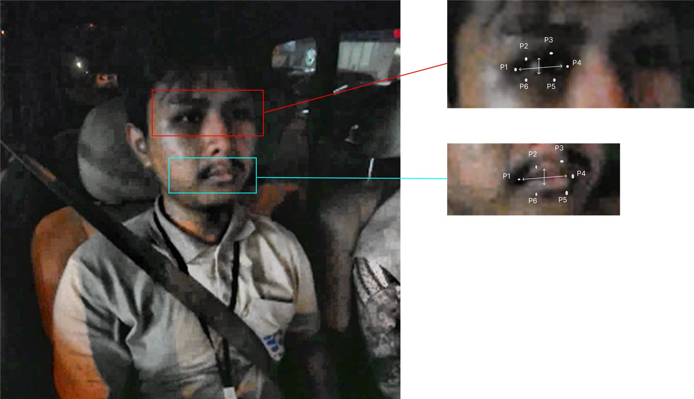
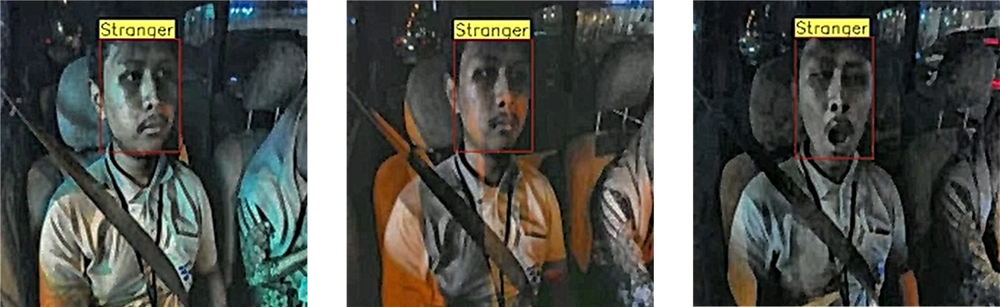
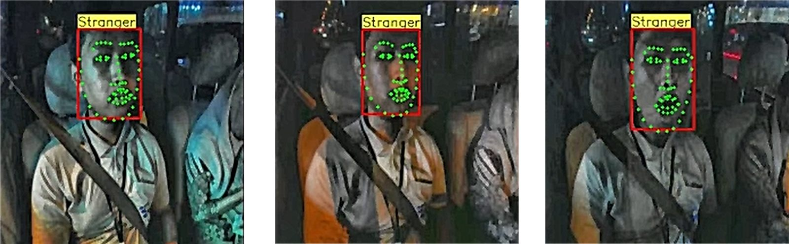

Case study
A drowsiness detector that still works after dark.
Driver fatigue detection systems are built on faces lit by daylight. Drivers keep driving after sunset. This project rebuilt the front of the pipeline so the face is still readable when the cabin is dark.

What shipped
End to end, in numbers
80%
PERCLOS detection accuracy, the percentage of time the eyes are measured closed.
80%
Yawning detection accuracy, measured the same way over frame windows.
14 → 8 FPS
Enhancement alone runs at 14 FPS on the Jetson. The full pipeline with the GUI attached runs at 8.
20 lux
The floor below which no amount of enhancement recovers a usable face.
Figures from the IES 2025 paper and the internship work at Politeknik Elektronika Negeri Surabaya (PENS).
The problem
Fatigue detection cannot function in low-light conditions
The World Health Organization estimates 1.9 million lives are at risk from road accidents worldwide, and driver drowsiness is one of the leading causes of the fatal ones. Vision-based fatigue detection is a reasonable answer to it: the eyes and mouth give the signal away.
The catch is that published systems are generally validated on faces in the visible light spectrum. Drivers work from morning to night. In a dark cabin, uneven light and shadow blur or erase the exact features the detector depends on, so the system fails silently at the hours fatigue matters most.
Simply brightening the image doesn't solve it either. Histogram Equalization and its adaptive variant over-enhance and amplify noise, which degrades interpretation rather than improving it. The detector doesn't produce a wrong answer in the dark; it produces no answer at all.
The solution
Fix the image before the detector ever sees it
Illumination-invariant pre-processing
The enhancement sits ahead of detection, so the existing drowsiness logic is untouched. Lighting stops being the detector's problem.
Fuzzy sets to model doubt
Interval-Valued Intuitionistic Fuzzy Sets carry a hesitation degree alongside membership, so very dark pixels are treated as uncertain rather than simply black.
CLAHE with a clip limit
Local contrast is equalised block by block at a clip limit of 8, which lifts detail without the global over-enhancement that HE produces.
Defuzzification as a brake
A highlight modifier pulls contrast back down at the end. CLAHE alone scores higher on entropy but introduces noise; this trades a little of that back for stability.
Saturation kept honest
Raising brightness in HSV pulls the value channel away from saturation and skews colour, so saturation is adjusted proportionally to the change.
No extra hardware
The system stabilises facial visibility across times of day without an infrared emitter or cabin light aimed at the driver's face.
Background
The system works perfectly, right up until the sun goes down
A driver has been on the road for six hours. It's past nine at night. The cabin is dark except for the dashboard glow and whatever the headlights throw back from the road. Their eyes start closing for a second longer than a blink. This is the exact moment a drowsiness detection system is supposed to earn its place, and the moment most of them stop working.
In the previous work I reviewed, systems were tested in good light. Put the same camera in a car at night, or driving into low sun, or through a tunnel, and the face the system depends on simply isn't legible anymore. That's the gap this project set out to close: not a better drowsiness detector, but one that still functions in the lighting conditions where drowsiness actually happens.
CAMERA
Yealink UVC30, 120° FOV
COMPUTE
NVIDIA Jetson AGX Xavier
STACK
C++, ROS, OpenCV, TensorRT
PLACEMENT
Windscreen, 59 cm from driver's face
Advised by Dr. Bima Sena Bayu Dewantara and Prof. Ir. Dadet Pramadihanto, M.Eng, Ph.D at PENS.
Research
Testing the enhancement layer before trusting the detector
I treated image enhancement as the real problem, not as preprocessing. Before touching the drowsiness logic, I compared two published illumination-invariant methods head to head, on the same 1,000 frames: OptiFuzz, and Interval-Valued Intuitionistic Fuzzy Sets (IVIFS) combined with Retinex-based correction.
The detection pipeline downstream is only as good as the image it receives. A system that enhances brightness but introduces noise, or produces a beautiful image at 2.5 frames per second, hasn't solved the problem, it has moved it. So the comparison measured image quality and speed together, on the same frames.
OPTIFUZZ
11.0563
entropy, 2.5 FPS
IVIFS + RETINEX
10.3472
entropy, 14 FPS
OptiFuzz's block histogram equalisation produced the higher-entropy image, roughly 0.25 bits ahead, but it was also five and a half times slower, at 2.5 FPS. In a moving car, a system at 2.5 FPS is making a decision about a driver's alertness on roughly 400 milliseconds of stale information.
IVIFS held the structure that actually mattered. Its CLAHE clip limit prevents noise accumulating in homogeneous regions, so it preserved facial edges and cabin contours without the coarse blocking artefacts OptiFuzz introduced: slightly less entropy, substantially cleaner structure, and fast enough to run live. The headline number was not the deciding number. That's the finding.

Define
One constraint governed every decision after this point
The system has to run in real time on hardware that fits in a car, in lighting conditions the camera was never designed for. Every subsequent choice traces back to this sentence: it ruled out the higher-quality enhancement method, set the processing budget, and determined what could and couldn't be computed per frame.
HARD REQUIREMENT
Enhancement must not alter the geometry of the eyes and mouth. Eye and mouth aspect ratios are the fatigue signal: distort them and the correction is worse than the darkness.
HARD CONSTRAINT
Minimum 20 lux for eyes, mouth and chin to stay resolvable; 640×480 frames published over ROS at 30 Hz; real time on the Jetson, not a curated still dataset.
Ideation & pipeline
Nine stages between the camera and the detector
Why enhance the image instead of training a more robust detector? Because a detector trained to handle darkness still has to see something. Enhancement fixes the input for every downstream stage at once: face detection, landmark extraction and expression classification all inherit the improvement.
The face is unreadable in low light
IVIFS with Retinex correction raises illumination without adding noise, keeping the bounding box and 68-point landmark detection viable.
Eye size varies between drivers
PERCLOS measures closure relative to each driver's own maximum open state, not a fixed threshold.
A single frame can't tell a blink from drowsiness
PERCLOS and yawning are computed over frame windows, not instants; a mouth open for 60 consecutive frames is a yawn.
No single technique did the job on its own. Each stage covers the previous one's weakness, and the last stage exists specifically to undo the excess of the one before it.
- Frame
- →
- Fuzzification
- →
- Intuitionistic fuzzification
- →
- IVIFS
- →
- RGB → HSV
- →
- CLAHE, clip 8
- →
- Linear enhancement
- →
- Dynamic range expansion
- →
- Saturation adjustment
- →
- Defuzzification
- →
- To detector
01
Fuzzification
Pixels normalised to [0,1] and turned into membership and non-membership values.
02
Intuitionistic fuzzification
A hesitation index is added, giving the image a representation of doubt that resists noise.
03
IVIFS
Doubt is scaled into an interval, making the equalisation that follows adaptive to very low luminance.
04
RGB to HSV
Brightness is separated from colour so the value channel can be worked on alone.
05
CLAHE, clip limit 8
Local contrast equalised per block. This is where the histogram genuinely opens up.
06
Linear enhancement
The value channel is stretched, bounded to avoid an excessive lift.
07
Dynamic range expansion
Brightening bunches pixels at high grey levels; a piecewise function pushes them apart again.
08
Saturation adjustment
Saturation is corrected against the mean gap between the S and V channels, keeping colour plausible.
09
Defuzzification
Fuzzy values return to crisp intensities, with a highlight modifier subtracted to prevent extreme saturation.
Design
The monitoring GUI, and the numbers it had to surface
A real-time GUI sat on top of the pipeline for visual monitoring and reporting. Its job was to make the intermediate state visible, because when a detection is wrong you need to know whether the image, the landmarks or the thresholds failed. EAR and MAR feed a decision tree producing five states: normal, glaring eyes, eyes closed temporary, sleeping, and yawning, which can co-occur with any of the eye states. The signal plot changes colour with the detected state, so a viewer sees the trend that produced a classification, not just the classification itself.

EAR
Eye Aspect Ratio
Below a threshold of 0.2 the frame counts toward PERCLOS, the percentage of time the eyes are closed.
MAR
Mouth Aspect Ratio
Above 0.7 the frame counts toward the yawning indicator.
HEAD POSE
Yaw, pitch, roll
Reported alongside the ratios, so a nodding head reads differently from a driver simply looking away.
Testing & iterations
1,000 frames, measured stage by stage
Entropy was computed across 1,000 frames at every stage of the pipeline. Reading the table left to right shows which step earns its place, and where the last one deliberately gives ground.
6.679
Original
8.075
Fuzzy
8.021
Intuitionistic fuzzy
9.642
IVIFS
11.091
CLAHE
10.250
Defuzzification


CLAHE produces the highest entropy of any stage, and taking it as the final output would have made the strongest-looking number. It also produces excessive noise on some frames. Defuzzification drops entropy to 10.250 and that drop is the point: it acts as a filter against over-enhancement.
The end-to-end check was landmark detection: 670 of 1,000 frames resolved correctly after enhancement. One visible artefact remains: a closed mouth still reporting a non-zero yawning value, because the indicator updates across a window of frames rather than every frame.
Result & final thoughts
Published, and honest about what's left
The work was published and presented at the International Electronics Symposium 2025 as “Low Contrast Enhancement for Facial Feature Expression”. It shows that a fuzzy, Retinex-informed pre-processing stage makes facial features detectable at night without touching the detector behind it, and without adding hardware.
What I take from it is the value of picking the right measure early. Entropy, not a brighter-looking picture, is what let the pipeline be argued about stage by stage, and what justified deliberately giving back some contrast at the final step.
The gap between 14 FPS and 8 FPS is the honest cost of the interface: a real tradeoff made in favour of visibility, worth naming rather than reporting only the faster number.
80% accuracy is a research result, not a deployment result. A production bar would need testing across far more drivers, vehicle types, and longer continuous sessions.
The 20 lux floor is a real boundary. Below it, no visible-spectrum enhancement recovers a usable face; solving genuinely dark conditions likely means moving to infrared.